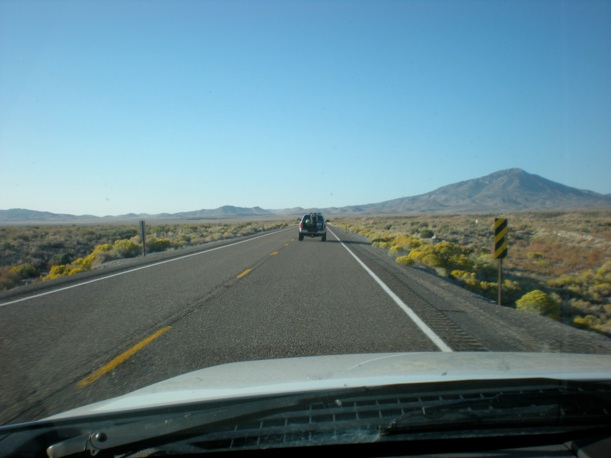
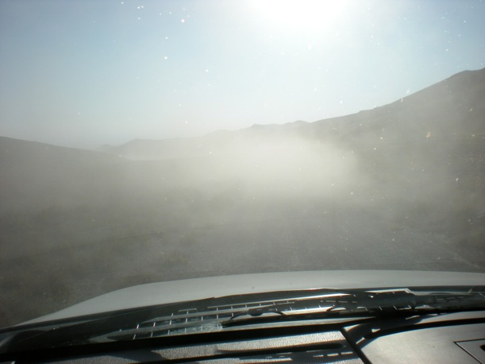
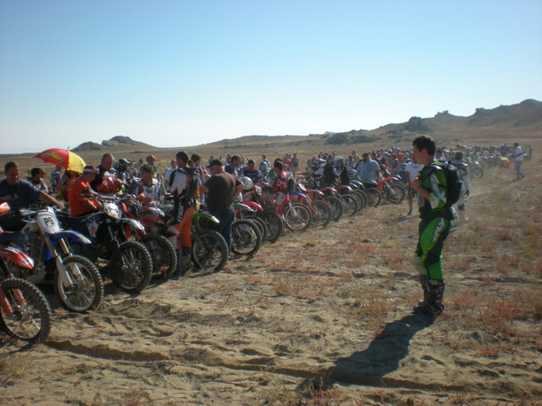
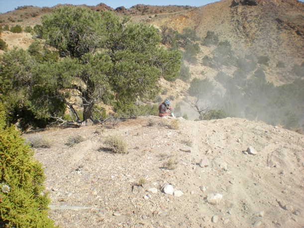
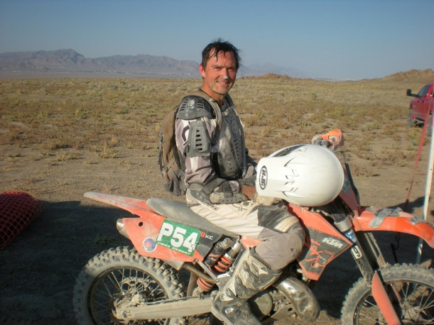
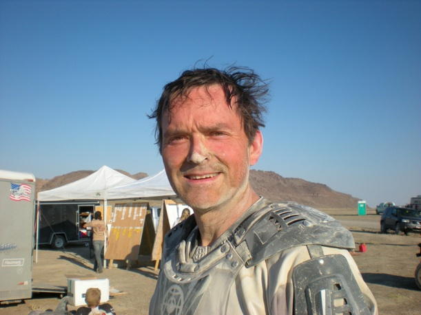
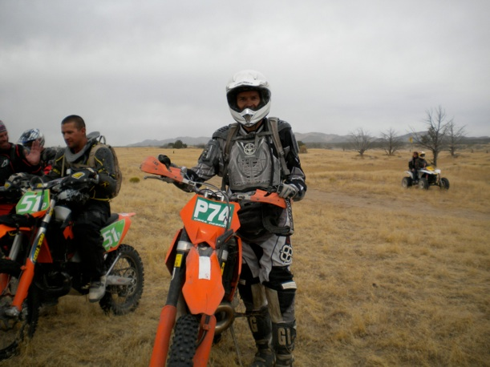
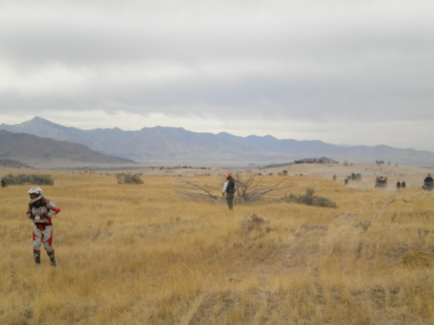
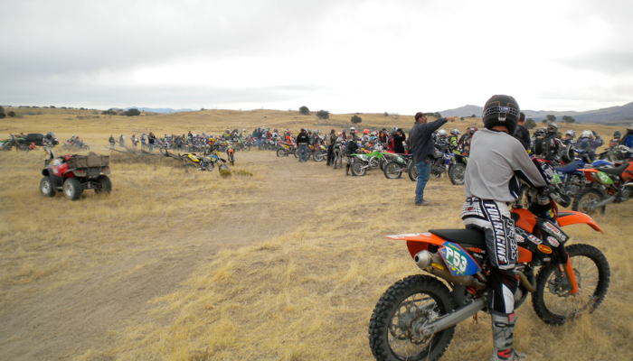

Tale of Two Races
Saturday, October 3, 2009
It was the best of times, it was the...well, best of times. Two desert races on back-to-back Saturdays! Hard to beat that.
The first race, the Wendover 100, was on September 26. It was actually 110 miles long. The club that organized it, the Desert Foxes, created a point-to-point course rather than one or more loops like most other races. The race was part of the AMA National Hare and Hound series with pros Russ Pearson and Destry Abbott running the race (they finished #1 and #2, respectively).
Getting close to the race site.

Just after turning onto the dirt road leading to the start area. The dust kicked up by the truck in front of me is a sign of things to come.

Starting line

The start was done in 3 waves (experts, amateurs, and novices), with about 5-10 minutes between waves. Video of the experts start from my position in the novice wave. After the experts take off the amateur wave moves up to the starting line
Yes, it was dusty!
I only got one picture during the race, which was after a hill climb while I took a short break. I heard the next guy coming and watched with interest as he tried to go up the hill. Unfortunately, he stalled about 2/3 the way up. I heard quite a bit of cussing as he tried to restart his bike and get it going on the loose hillside.

About 1/4 mile from the finish line I was in 5th gear going down a straight section when I came to an obstacle that was mentioned in the pre-race rider’s meeting. It was a white silt bed that was about a foot and a half deep. There were plenty of ruts through it so I thought I’d better slow down a little. I shifted down into 4th and then hit the silt bed. Unfortunately, I got cross-rutted and had a spectacular wreck that kicked up a huge white cloud of silt. The good thing is that the silt was very soft so my high speed get-off had an uneventful landing. The bad thing is that the silt got everywhere and I arose out of the silt bed covered in white.
This is just after crossing the finish line.


The race was great fun, although also exhausting. I finished in just over 6 hours with my heart rate monitor reporting that I had burned 4,400 calories, with an average heart rate of 142 bpm. I went riding again the following Tuesday and found I definitely had not yet recovered from the race. So, I took it kind of easy this week and only did one mountain bike ride and no weight training.
On October 3 the next race, also part of the national Hare and Hound series, took place at Cherry Creek, organized by the Sage Riders club. It consisted of 2 loops, the first 60 miles, and the second 45. Here I am before the start.

Looking down the starting straight

A little ways past this section we were routed through deep sand, which I don’t do too good in. Fortunately I made it through without getting bogged down too much and then we hit a bunch of fun trails, including a lot of tight, twisty single track.
Here is a photo of me out on the course taken by a professional photographer (he photographed pretty much all of the racers)

There were quite a few hill climbs. Here is one of them
I have to confess that I didn’t make it up this one on my first try so it sapped quite a bit of energy to finally get my bike to the top. As I was finishing the first loop, it was clear that my energy level was so low that doing the 2nd loop would not be a good idea. As I was talking to one of my friends after the race he pointed out that when you get older like us it takes more than a week to recover from a race. Boy, I sure found that to be true! I think 2 weeks between races is probably a good recovery interval for those of us who are no longer young bucks.
So, I stopped after the first loop, which took me 3 hrs 40 min to complete. It turns out that the race winner had already finished the complete course so the rule is that if someone stops after the first loop they are considered to have finished the race. The really funny thing is that I came in first in my class and got another trophy. I was shocked! Despite the fatigue, and feeling a little sick later that night, it was a great race and I’m really glad I did it.
P.S. I found a video of the start for all three groups (experts, amateurs, and novices) on YouTube.
